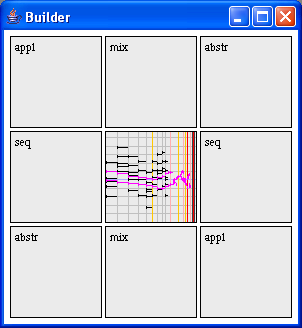

The builder in another method to build new musical objects using the construction rules of Elody. You first have to drag an object into the central box. A second object must be dropped into one of the 8 remaining boxes to build a new object. Depending of the box used, the resulting object will be a new Seq, or Mix or an application object. The resulting object always stays in the central box.
For example to build a new sequence SEQ A B, you first have to drag A into the central box, then B into the right seq box, and the new SEQ A B is now available in the central box.